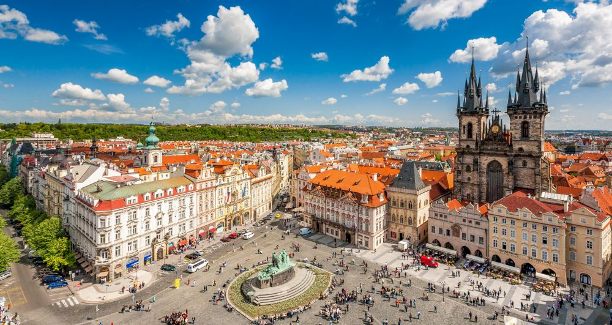
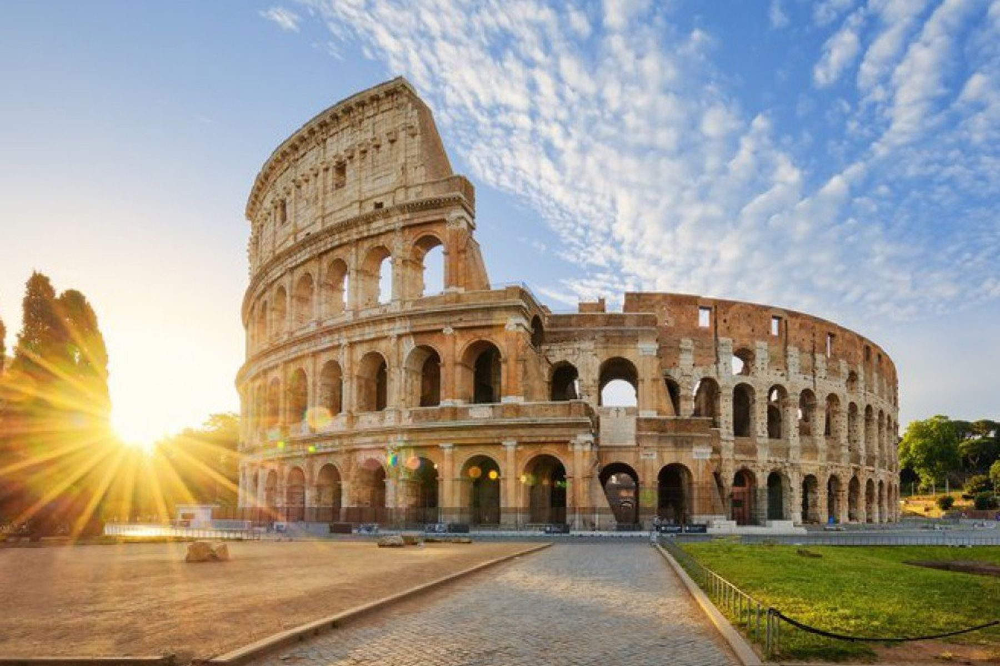

The history of the Czech Republic is beautifully visible in the Czech capital Prague. The historic part of the city has been so well preserved that you can see buildings and style elements from many centuries back in the streets. It is not for nothing that Prague attracts millions of tourists every year, who are mainly drawn to the romance of the old town. Several nicknames are used to describe the uniqueness of Prague, such as “The Golden City” and “City of the Hundred Towers”. The fact is that the beauty of Prague is beyond question and you should see Prague at least once in your life.
 Book your holidayRome is a fascinating mix of high culture, art, fashion and historic architecture. In the city with its mild Mediterranean climate, life lives on like one long uninterrupted theatrical performance. If you've ever wondered what la dolce vita means, you should take a vacation to Rome! And if the cobbled streets, beautiful architecture and romance make you long for more, don't forget to toss a coin in the Trevi Fountain. According to a legend, one day you will return to Rome.
 Book your holidayA holiday in Madrid is a chic city with a rural idyll, cheerful chaos and a good dose of charm. The capital of Spain celebrates life full of vitality and has a contagious appetite for art, music and enjoyment of life. At first glance, Madrid (with 3.3 million inhabitants) has the allure of the capital of the Spanish kingdom, a position it has held since 1561. You will see beautiful palaces and buildings and elegant boulevards. The 21st century is emerging with a cosmopolitan and modern urban center with gleaming skyscrapers.
 Book your holiday
Book your holiday